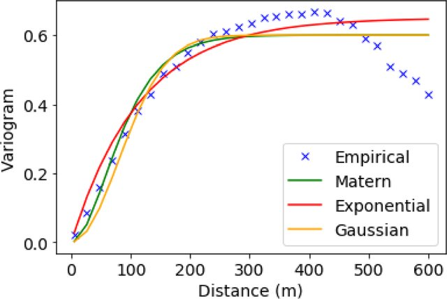

In this article we will try to understand the concept of Variogram and how it’s use in Kriging in geospatial analysis. We will compute experimental variogram and semivariogram for hypothetical bore hole data. Later we utilize the variogram to perform interpolate the water levels across all the datapoints (kriging).
The First Law of Geography according to Waldo Tobler is:
“Everything is related to everything else, but near things are more related than distant things.” Source
What is a Variogram?
A variogram is a plot or function that shows how the similarity (or difference) between measurements changes as the distance between them increases. It helps answer questions like: - If I measure rainfall at two locations, how similar are the readings likely to be based on how far apart they are? - How far apart do I need to go before the measurements become completely unrelated?
A sample variogram is show in the figure below: 
What is a Semivariogram?
A semivariogram is a specific part of the variogram that measures the average squared difference between measurements separated by a certain distance. It quantifies how variable the data is as a function of spatial separation. In other terms, at short distances, the semivariogram shows small differences because measurements are similar (e.g., rainfall in two nearby areas is likely similar). As the distance increases, the differences grow until they reach a maximum point where the measurements are no longer related. The semivariogram depicts the spatial [autocorrelation]^(Autocorrelation is the degree of similarity of a variable between two successive time intervals.) of the measured sample points. Once each pair of locations is plotted, a model is fit through them.
Steps to build a variogram
The variogram function in the gstat package calculates an experimental variogram to quantifies the spatial correlation in a dataset. To compute a experimental variogram first we generate a sample location and random groundwater data.
# Load libraries
if (!require(gstat)) { install.packages('gstat'); library(gstat)}
if (!require(sp)) { install.packages('sp'); library(sp)}
# Step 1: Prepare dataset
set.seed(195) # For reproducibility
n <- 50 # Number of sample points
locations <- data.frame(
x = runif(n, 0, 100), # Random x-coordinates
y = runif(n, 0, 100), # Random y-coordinates
groundwater = runif(n, 50, 100) # Random groundwater levels
)
# Convert lat-lon to spatial object
coordinates(locations) <- ~x + yNow we compute the experimental variogram
# Step 2: Compute the experimental variogram
variogram_exp <- variogram(groundwater ~ 1, locations) # Semivariogram of groundwater levelsThe formula can have format
independent_variable ~ 1orindependent_variable ~ x+y. X or/and Y, any independent variables or covariates (if applicable). If the formula is ~ 1, it means there are no covariates, and the variogram will be calculated solely based on spatial relationships.Formatting the data with Spatial coordinates latitude and longitude. Bind independent variable along with dependent (i.e groundwater level).
Pairwise distance calculation between all points using spatial coordinates. This forms the foundation for grouping points into distance bins. Distance is calculated using the coordinate system’s specified projection. For geographic coordinates (latitude/longitude), great-circle distances may be used.
Distances between points are grouped into bins based on the width (default lag size). This creates intervals such as 0–10 km, 10–20 km, and so on. The binning process ensures that variances are calculated for pairs of points within the same distance range.
We fit Sperical model to the experimental variogram.
# Step 3: Fit a variogram model
variogram_model <- fit.variogram(variogram_exp, model = vgm("Sph")) # Fit a spherical modelThe function returns a data frame with:
dist: Average distance for each bin.gamma: Calculated semivariance for each bin.np: Number of pairs of points in each bin.
Fitting a model
Variogram models are mathematical functions used to describe spatial autocorrelation in geostatistics. The four most common variogram models are Exponential, Spherical, Gaussian, and Matérn.
1. Exponential (Exp) Model:
Equation: \(\gamma(h) = c \cdot \left(1 - e^{-\frac{h}{a}}\right)\)
Parameters:
- \(c\): Sill (the plateau of the variogram, representing maximum variance).
- \(a\): Range (the distance where spatial correlation becomes negligible).
- \(h\): Lag distance.
Characteristics and use:
- The variogram increases rapidly at short distances and asymptotically approaches the sill.
- Suitable for modeling phenomena where correlations decrease gradually with distance.
- The phenomenon has a short-range correlation but gradually decreases over longer distances.
- There is no sharp cutoff for spatial correlation, but the effect diminishes rapidly.
- Common in phenomena with an exponential decay of correlation, such as temperature, humidity, or chemical concentrations.
- Rapid increase at short distances.
- Asymptotes to the sill but never reaches it exactly.
2. Spherical (Sph):
Equation: \[ \gamma(h) = \begin{cases} c \cdot \left(\frac{3h}{2a} - \frac{h^3}{2a^3}\right) & \text{if } h \leq a, \\ c & \text{if } h > a \end{cases} \]
Parameters:
- \(c\): Sill.
- \(a\): Range.
- \(h\): Lag distance.
Characteristics and use:
- The variogram increases initially in a curved manner and levels off abruptly at the range.
- Often used for data with a clear spatial structure and finite correlation ranges.
- The phenomenon has a clear spatial range where correlation becomes negligible.
- There is a sharp cutoff for spatial correlation (beyond which variance stabilizes).
- Suitable for geological and mining data, such as ore grade distribution or soil properties.
- Increases in a curved fashion initially.
- Levels off abruptly at the range.
3. Gaussian (Gau):
Equation: \(\gamma(h) = c \cdot \left(1 - e^{-\frac{h^2}{a^2}}\right)\)
Parameters:
- \(c\): Sill.
- \(a\): Range.
- \(h\): Lag distance.
Characteristics and use:
- The variogram starts very smoothly and increases gradually, approaching the sill at longer ranges.
- Suitable for phenomena with very smooth transitions.
- The phenomenon exhibits very smooth and gradual transitions over space.
- Suitable for modeling smoothly varying phenomena, such as groundwater levels, air pollution, or temperature gradients.
- Best for data that shows strong correlation at short distances with a gradual decay.
- Starts very smoothly (parabolic near the origin).
- Increases more gradually and approaches the sill asymptotically.
4. Matérn (Mat):
- Equation: \(\gamma(h) = c \cdot \left(1 - \frac{2^{1-\nu}}{\Gamma(\nu)} \cdot \left(\frac{h}{a}\right)^\nu \cdot K_\nu\left(\frac{h}{a}\right)\right)\)
- \(K_\nu\): Modified Bessel function of the second kind.
- \(\nu\): Smoothness parameter.
- Parameters:
- \(c\): Sill.
- \(a\): Range.
- \(\nu\): Smoothness parameter.
- \(h\): Lag distance.
- Characteristics:
- A flexible model that encompasses a range of behaviors depending on the smoothness parameter (\(\nu\)).
- Includes exponential (\(\nu = 0.5\)) and Gaussian (\(\nu \to \infty\)) as special cases.
- You need a flexible model that can capture a wide range of spatial behaviors, from rough to smooth.
- The Matérn model allows adjusting the smoothness parameter (\(\nu\)) to fit phenomena with intermediate behaviors (between exponential and Gaussian).
- Commonly used in advanced geostatistics, environmental modeling, and when a more general variogram is needed.
- Versatile; smoothness depends on \(\nu\):
- \(\nu = 0.5\): Similar to exponential model.
- Large \(\nu\): Approaches Gaussian model.
- Useful for tailoring the model to specific data characteristics.
These models are used in geostatistical analyses to model spatial relationships, predict values at unmeasured locations, and inform kriging and other interpolation methods. Different variogram models are chosen based on the nature of the spatial relationship in your data, the smoothness of the phenomenon being modeled, and the expected correlation structure. The summary of selecting a variogram model presented below:
| Condition | Recommended Model |
|---|---|
| Sharp cutoff in spatial correlation | Spherical (Sph) |
| Rapid decay of correlation | Exponential (Exp) |
| Smooth transitions over space | Gaussian (Gau) |
| Flexible/Intermediate behavior | Matérn (Mat) |
| Short-range dominance | Exponential or Matérn |
| Long-range dominance | Spherical or Gaussian |
| Uncertainty about smoothness | Matérn (adjust \(\nu\)) |
Semivariance Calculation
The semivariance \(\gamma(h)\) is computed for each distance bin \(h\). The formula is:
\[ \gamma(h) = \frac{1}{2N(h)} \sum_{i=1}^{N(h)} \left( z(x_i) - z(x_i + h) \right)^2 \]
Where:
- \(N(h)\): Number of point pairs in the distance bin \(h\).
- \(z(x_i)\): Observed value at location \(x_i\).
- \(z(x_i + h)\): Observed value at location \(x_i + h\).
This gives the average squared difference of observed values separated by \(h\).
The formula shown is for computing semivariance for a given lag or distance ℎ, but it is not directly tied to a specific variogram model such as spherical, exponential, or Gaussian. This formula is a general expression used to calculate experimental semivariance, which is then plotted as an experimental variogram Once the experimental variogram is computed, you can fit it with a specific theoretical variogram model, such as Spherical, Exponential, Gaussian, etc. To identify the specific model, you would calculate the semivariances using the given formula, plot them against distance h, and then choose the model that best fits the curve.
Now plot experiment variogram and fitted model variogram
# Step 4: Display variogram and fitted model
plot(variogram_exp, variogram_model, main = "Semivariogram and Fitted Sperical Model")
variogram_model_exp <- fit.variogram(variogram_exp, model = vgm("Exp")) # Fit a spherical model
plot(variogram_exp, variogram_model_exp, main = "Semivariogram and Fitted Exponential Model")
Next, we use the fitted model variogram for kriging.
# Step 5: Create a prediction grid for kriging
x_range <- seq(0, 100, by = 1)
y_range <- seq(0, 100, by = 1)
grid <- expand.grid(x = x_range, y = y_range)
coordinates(grid) <- ~x + y
gridded(grid) <- TRUE
# Step 6: Perform ordinary kriging
kriging_result <- krige(groundwater ~ 1, locations, grid, model = variogram_model)## [using ordinary kriging]# Step 7: Plot kriging results
spplot(kriging_result["var1.pred"], main = "Kriging Predicted Groundwater Levels")